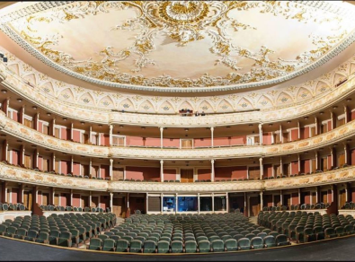

<section id="about" class="about">
    <div class="container">
        <h2 class="about-title"><span class="about-title-accent">ПРО</span> ТЕАТР</h2>
        <div class="about-container">
            <div class="about-content">
                <p class="about-sub-title">Кращий театр в області</p>
                <p class="about-description">
                    Всі ці імена загальновідомі, як загальновідомо і те, що марка Театру імені Лесі Українки завжди привертала до себе не тільки професіоналів, але й непересічних глядачів сотень міст нинішнього простору СНД, де проходили гастролі театру. Офіційна біографія Національного академічного театру російської драми імені Лесі Українки починається в 1926 році, коли рішенням Київського окрвиконкому була організована в Києві Російська державна драма, і 15 жовтня того ж року театр відкрив свій перший сезон. У 1941 році йому було присвоєно ім'я Лесі Українки.
                </p>
            </div>
            <div class="about-numbers">
                <p class="about-sub-title">Трохи про цифри</p>
                <ul class="about-number-list">
                    <li class="about-number-item">
                        <svg class="about-number-icon" width="70" height="70">
                            <use href="../img/icons.svg#icon-armchair"></use>
                        </svg>
                        <p class="about-number-text">
                            <span class="about-number-text-accent">1600</span> посадочних місць
                        </p>
                    </li>
                    <li class="about-number-item">
                        <svg class="about-number-icon" width="70" height="70">
                            <use href="../img/icons.svg#icon-theater"></use>
                        </svg>
                        <p class="about-number-text">
                            <span class="about-number-text-accent">350</span> років історії
                        </p>
                    </li>
                </ul>
            </div>
            
        </div>
    </div>
</section>